IFCSR: Inference-Free Fidelity-Realism Control for One-Step Diffusion-based Real-World Image Super-Resolution
Abstract
Diffusion models have recently achieved remarkable success in real-world image super-resolution (ISR), typically balancing a trade-off between fidelity (i.e., similarity to HR images) and realism (i.e., perceptual naturalness). To better account for subjective preferences in image quality, controllable diffusion-based methods have been explored, allowing personalized adjustment of this trade-off via tunable parameters. While existing controllable methods have shown effective control, they typically operate in the latent space and require repeated network inference during adjustment, eventually limiting their practicality. In this paper, we propose IFCSR, a simple yet practical approach for one-step diffusion-based real-world ISR that enables inference-free control between fidelity and realism. The key idea is to design a controllable model that adjusts the fidelity-realism trade-off in the image space, rather than in the latent space. Such an image-space control allows users to seamlessly adjust the trade-off without extra inference after an initial inference of fidelity- and realism-specific images. We further introduce a two-stage training scheme and specialized losses that encourage the controllable space to span a broad spectrum of fidelity and realism. Our method achieves quality competitive with state-of-the-art models while providing a practical advantage through inference-free control.
Method
IFCSR enables controllable fidelity-realism trade-offs in one-step diffusion-based real-world image super-resolution without additional inference cost. We train fidelity- and realism-specific networks using a two-stage training scheme and specialized losses. During inference, their outputs are linearly blended using a controllable parameter γ, enabling adjustment of the fidelity-realism spectrum without extra inference.
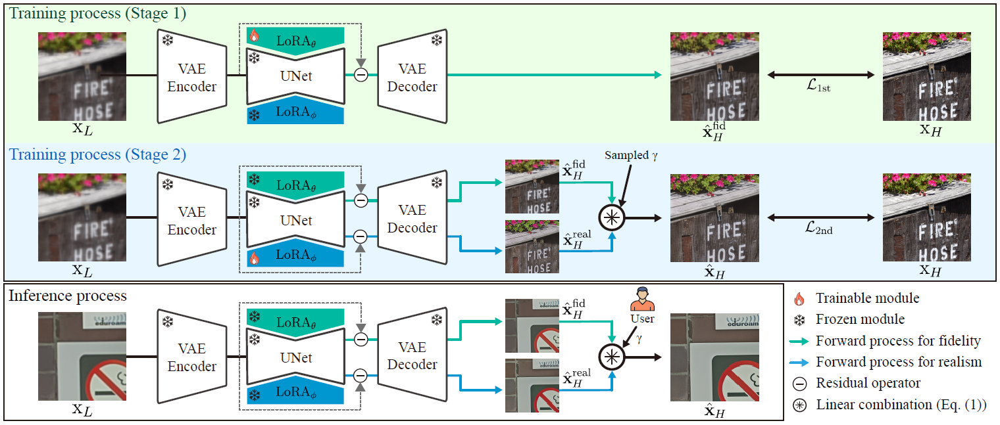
Formulation
Given the fidelity- and realism-specific networks, $f_{\theta}$ and $f_{\phi}$, we define our controllable model as a linear combination of their outputs, i.e., $\hat{x}^{\text{fid}}_{H}$ and $\hat{x}^{\text{real}}_{H}$, using a parameter $\gamma$.
Two-Stage Training Scheme
We adopts a sequential two-stage training strategy to disentangle fidelity and realism objectives. First, the fidelity branch is optimized using reconstruction-oriented losses to maximize restoration accuracy. Then, the realism branch is initialized from the fidelity branch and further optimized using perceptual objectives, encouraging realistic texture generation while preserving semantic consistency.
Fidelity- and Realism-Specific Losses
We extends the LPIPS loss to explicitly specialize fidelity and realism behaviors. Motivated by the observation that shallow features capture low-level structures while deeper features encode high-level semantics, we apply depth-dependent weighting to LPIPS feature distances.
For fidelity-specific training, monotonically decreasing weights emphasize shallow layers, encouraging accurate reconstruction of edges, textures, and colors. For realism-specific training, monotonically increasing weights emphasize deeper layers, promoting perceptually realistic details and semantic consistency. This simple weighting strategy enables effective branch specialization without introducing additional networks or losses.
Quantitative Result
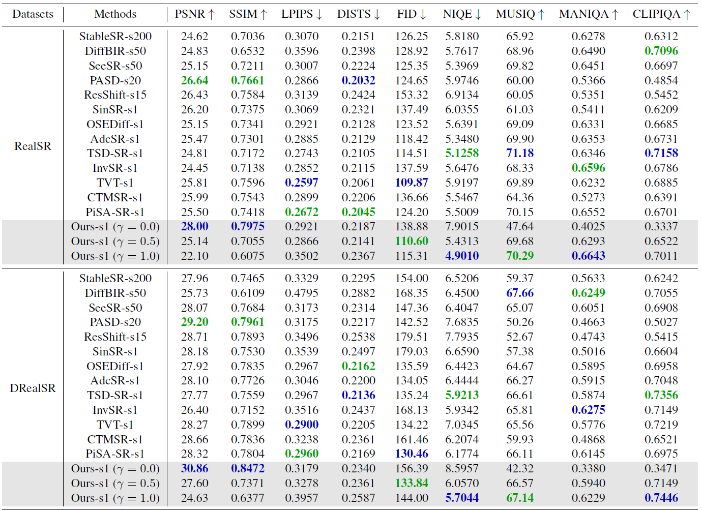
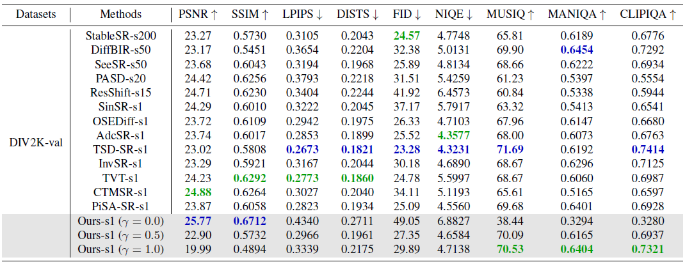
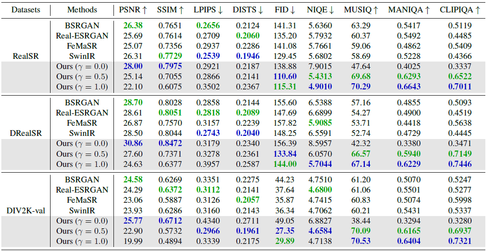
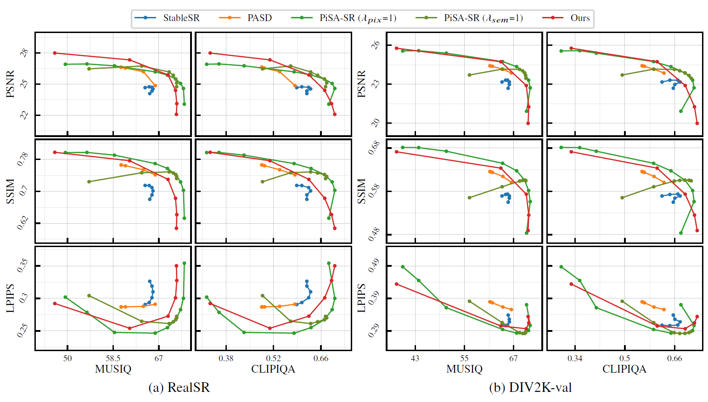
Qualitative Result
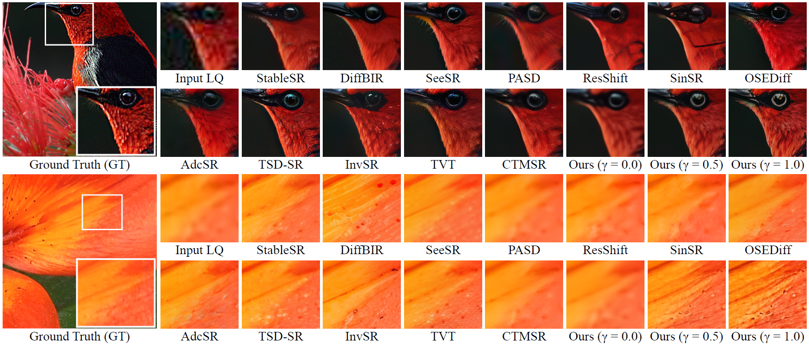
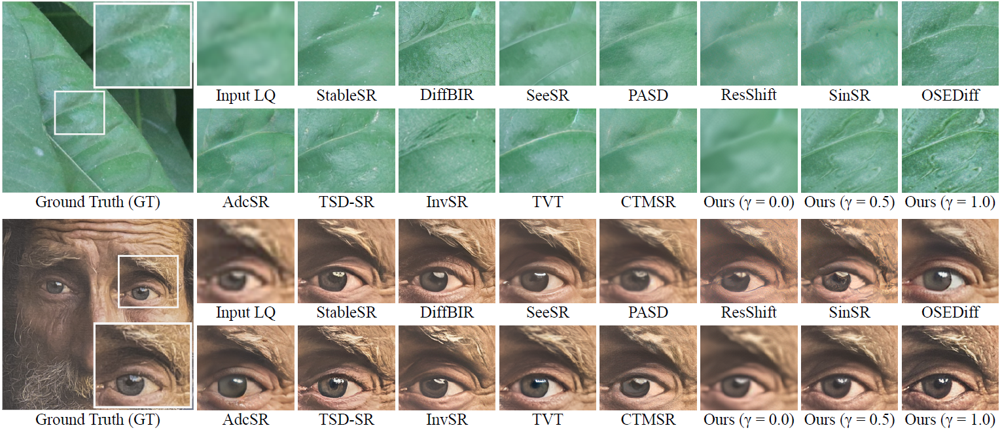
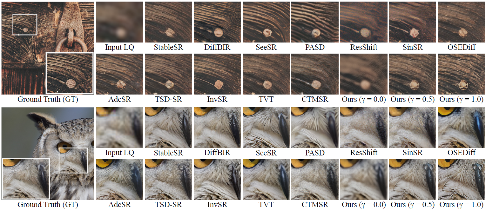
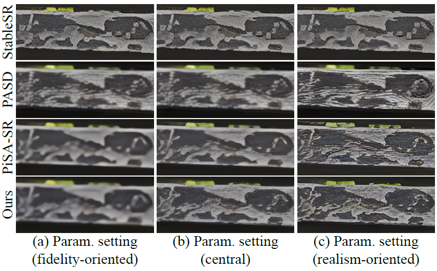
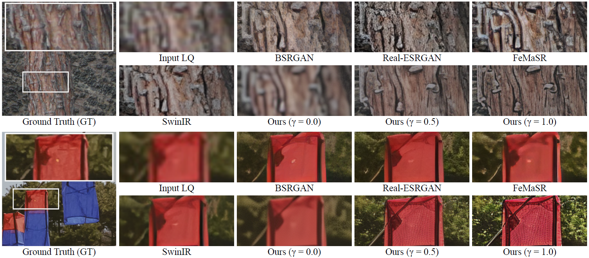
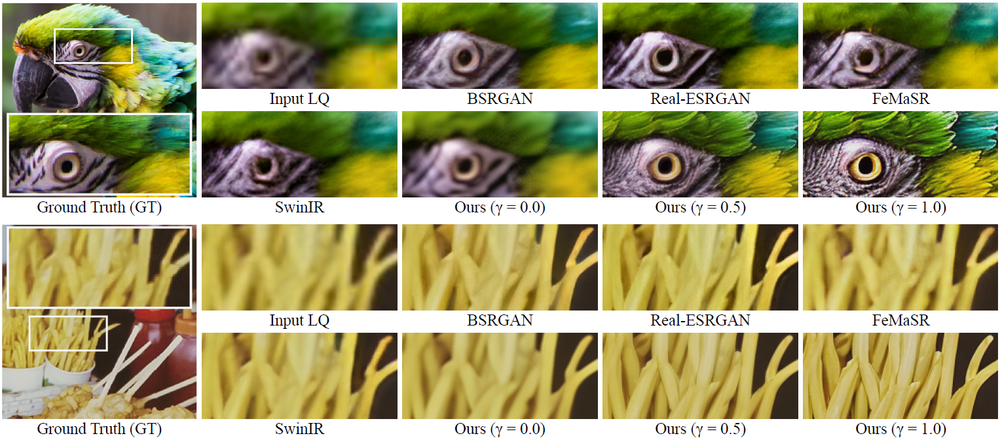
Video Demo
BibTeX
@InProceedings{Back_2026_CVPR,
author = {Back, Jonghee and Kim, Jongju and Kim, Jeong-Uk and Kim, Eunjin and Jeon, Minyong},
title = {IFCSR: Inference-Free Fidelity-Realism Control for One-Step Diffusion-based Real-World Image Super-Resolution},
booktitle = {Proceedings of the IEEE/CVF Conference on Computer Vision and Pattern Recognition (CVPR)},
month = {June},
year = {2026},
pages = {38187-38197}
}